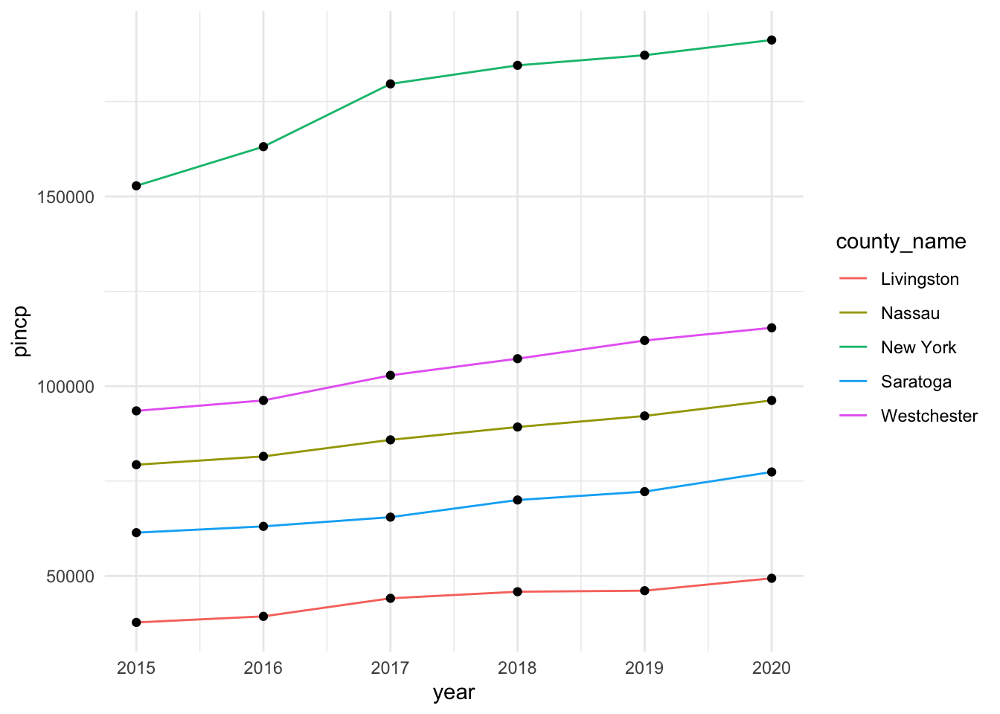
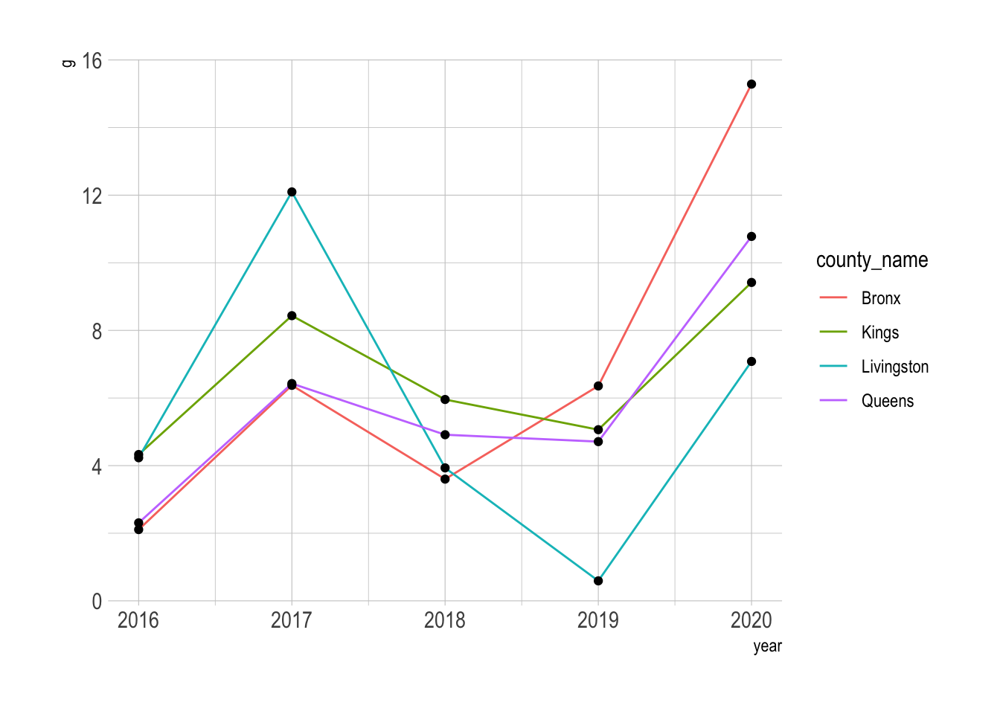
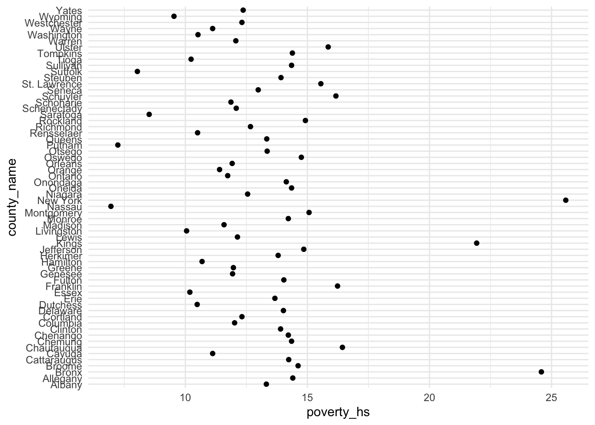
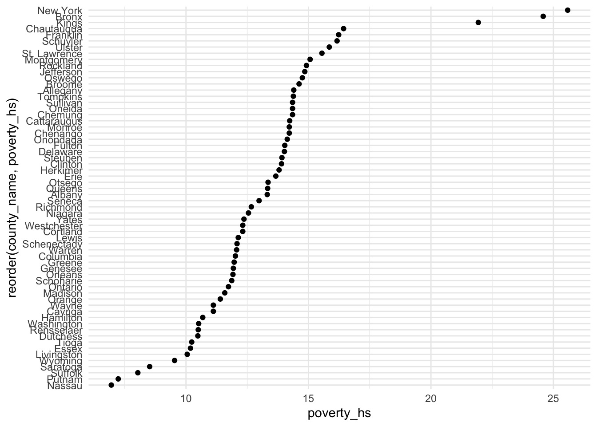
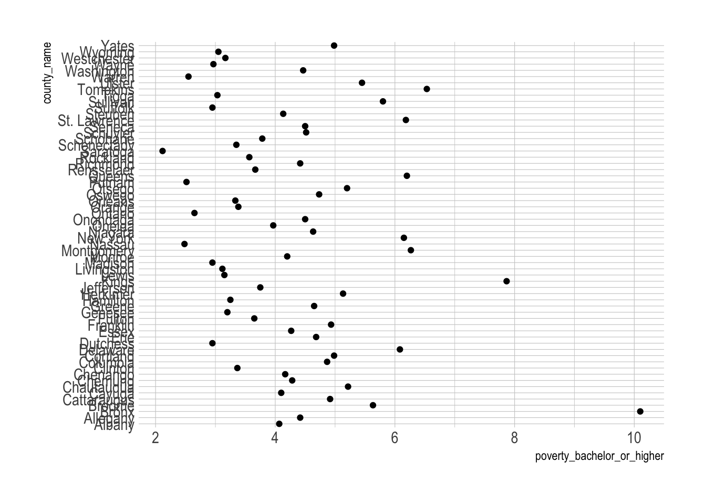
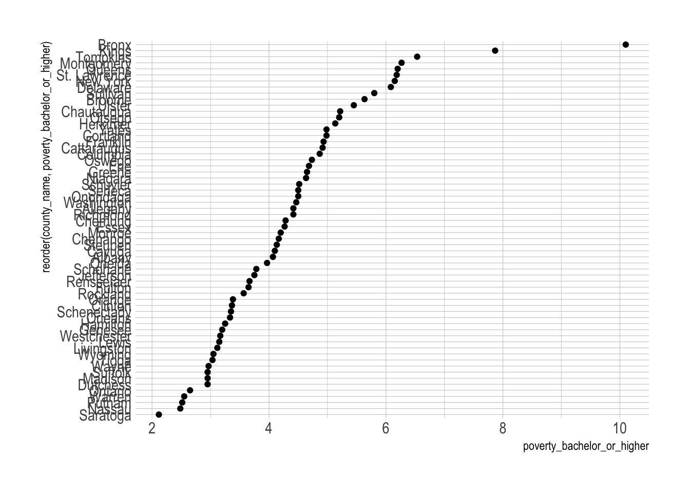

library(tidyverse)Read the data file, NY_school_enrollment_socioecon.csv,
as the data.frame object with the name,
NY_school_enrollment_socioecon, using (1) the
read_csv() function and (2) its URL,
https://bcdanl.github.io/data/NY_school_enrollment_socioecon.csv.
url <- 'https://bcdanl.github.io/data/NY_school_enrollment_socioecon.csv'
NY_school_enrollment_socioecon <- read_csv(url)For description of variables in
NY_school_enrollment_socioecon, refer to the file,
ny_school_enrollment_socioecon_description.zip, which is in
the Files section in our Canvas web-page. (I recommend you to extract
the zip file, and then read the file,
ny_school_enrollment_socioecon_description.csv, using Excel or
Numbers.)
Look up the meaning of variables d01_018,
d01_021, d01_024, and d01_027,
from the file,
ny_school_enrollment_socioecon_description.csv.
Find the top 5 counties in terms of the value of variable
d01_018 for each year.
Find the top 5 counties in terms of the value of variable
d01_021 for each year.
Find the top 5 counties in terms of the value of variable
d01_024 for each year.
Find the top 5 counties in terms of the value of variable
d01_027 for each year.
Make a comment on the result.
Q1a_25_34 <- NY_school_enrollment_socioecon %>%
select(year, county_name, d01_018) %>%
group_by(year) %>%
filter(min_rank(desc(d01_018)) <= 5) %>%
arrange(year, -d01_018)
Q1a_35_44 <- NY_school_enrollment_socioecon %>%
select(year, county_name, d01_021) %>%
group_by(year) %>%
filter(min_rank(desc(d01_021)) <= 5) %>%
arrange(year, -d01_021)
Q1a_45_64 <- NY_school_enrollment_socioecon %>%
select(year, county_name, d01_024) %>%
group_by(year) %>%
filter(min_rank(desc(d01_024)) <= 5) %>%
arrange(year, -d01_024)
Q1a_65_over <- NY_school_enrollment_socioecon %>%
select(year, county_name, d01_027) %>%
group_by(year) %>%
filter(min_rank(desc(d01_027)) <= 5) %>%
arrange(year, -d01_027)
# rank() and dense_rank() would also be okay.
# Here I do not provide any comments on the result.Look up the meaning of variables c02_010,
c04_010, and c06_010 from the file,
ny_school_enrollment_socioecon_description.csv.
Find the top 5 counties in terms of the value of variable
c02_010 for each year.
Find the top 5 counties in terms of the value of variable
c04_010 for each year.
Find the top 5 counties in terms of the value of variable
c06_010 for each year.
Make a comment on the result.
Q1b_college <- NY_school_enrollment_socioecon %>%
select(year, county_name, c02_010) %>%
group_by(year) %>%
filter(min_rank(desc(c02_010)) <= 5) %>%
arrange(year, -c02_010)
Q1b_college_pub <- NY_school_enrollment_socioecon %>%
select(year, county_name, c04_010) %>%
group_by(year) %>%
filter(min_rank(desc(c04_010)) <= 5) %>%
arrange(year, -c04_010)
Q1b_college_prv <- NY_school_enrollment_socioecon %>%
select(year, county_name, c06_010) %>%
group_by(year) %>%
filter(min_rank(desc(c06_010)) <= 5) %>%
arrange(year, -c06_010)
# Here I do not provide any comments on the result.Look up the meaning of variable pincp from the file,
ny_school_enrollment_socioecon_description.csv.
Provide both (1) one ggplot code with geom_line() and
(2) a couple of sentences to describe the yearly trend of
pincp for Livingston county and top 4 counties in terms of
the mean value of pincp over the years,
2015-2020.
NY_school_enrollment_socioecon %>%
select(year, county_name, pincp) %>%
group_by(county_name) %>%
mutate( pincp_mean = mean(pincp) ) %>%
ungroup() %>%
filter( dense_rank(desc(pincp_mean)) <= 4 |
county_name == "Livingston" ) %>%
ggplot() +
geom_line(aes(x = year, y = pincp, color = county_name)) +
geom_point(aes(x = year, y = pincp, group = county_name))
# Here I do not provide any comments on the result.Create the variable of the growth rate of pincp, where
the growth rate of pincp is defined as:
\[ (\text{Growth rate of } \texttt{pincp}
\text{ in year } \texttt{Y})
= \frac{( \texttt{pincp} \text{ in year } \texttt{Y} ) - (
\texttt{pincp} \text{ in year } \texttt{Y-1} )}{(\texttt{pincp} \text{
in year } \texttt{Y-1} )} \] Provide both (1) one ggplot code
with geom_line() and (2) a couple of sentences to describe
the yearly trend of the growth rate of pincp for Livingston
county and top 5 counties in terms of the mean value of the growth rate
of pincp over the years,
2016-2020.
NY_school_enrollment_socioecon %>%
select(year, county_name, pincp) %>%
group_by(county_name) %>%
mutate(g = 100 * (pincp - lag(pincp)) / lag(pincp),
g_mean = mean(g, na.rm = T) ) %>%
ungroup() %>%
filter( (dense_rank(desc(g_mean)) <= 4 |
county_name == "Livingston") & !is.na(g) ) %>%
ggplot() +
geom_line(aes(x = year, y = g, color = county_name)) +
geom_point(aes(x = year, y = g, group = county_name))
# Here I do not provide any comments on the result.Look up the meaning of variable poverty_hs and
poverty_bachelor_or_higher from the file,
ny_school_enrollment_socioecon_description.csv.
Summarize the mean value of poverty_hs and
poverty_bachelor_or_higher from years 2015 to
2020 for each county.
Provide both (1) a ggplot code with geom_point() and
(2) a couple of sentences to describe the mean value of
poverty_hs.
Provide both (1) a ggplot code with geom_point() and
(2) a couple of sentences to describe the mean value of
poverty_bachelor_or_higher.
q1e <- NY_school_enrollment_socioecon %>%
group_by(county_name) %>%
summarise(poverty_hs = mean(poverty_hs),
poverty_bachelor_or_higher = mean(poverty_bachelor_or_higher))
ggplot(q1e) +
geom_point(aes(x = poverty_hs,
y = county_name))
ggplot(q1e) +
geom_point(aes(x = poverty_hs,
y = reorder(county_name, poverty_hs)))
ggplot(q1e) +
geom_point(aes(x = poverty_bachelor_or_higher,
y = county_name))
ggplot(q1e) +
geom_point(aes(x = poverty_bachelor_or_higher,
y = reorder(county_name, poverty_bachelor_or_higher)))
# Here I do not provide any comments on the result.Read the data file, beer_markets.csv, as the data.frame
object with the name, beer_markets, using (1) the
read_csv() function and (2) its URL,
https://bcdanl.github.io/data/beer_markets.csv.
beer_markets <- read_csv(
'https://bcdanl.github.io/data/beer_markets.csv'
)beer_markets.csvEach observation in beer_markets.csv is a
household-level record for one transaction of beer.
hh: an identifier of the household;X_purchase_desc: details on the purchased item;quantity: the number of items purchased;brand: Bud Light, Busch Light, Coors Light, Miller
Lite, or Natural Light;spent: total dollar value of purchase;beer_floz: total volume of beer, in fluid ounces;price_per_floz: price per fl.oz. (i.e., beer spent/beer
floz);container: the type of container;promo: Whether the item was promoted (coupon or
otherwise);market: Scan-track market (or state if rural);Q2a1 <- beer_markets %>%
group_by(market) %>%
summarize(beer_floz_tot = sum(beer_floz, na.rm = T)) %>%
arrange(-beer_floz_tot) %>%
slice(1:5)
Q2a_bud <- beer_markets %>%
filter(brand == "BUD LIGHT") %>%
group_by(market) %>%
summarize(beer_floz_tot = sum(beer_floz, na.rm = T)) %>%
arrange(-beer_floz_tot) %>%
slice(1:5)
Q2a_busch <- beer_markets %>%
filter(brand == "BUSCH LIGHT") %>%
group_by(market) %>%
summarize(beer_floz_tot = sum(beer_floz, na.rm = T)) %>%
arrange(-beer_floz_tot) %>%
slice(1:5)
Q2a_coors <- beer_markets %>%
filter(brand == "COORS LIGHT") %>%
group_by(market) %>%
summarize(beer_floz_tot = sum(beer_floz, na.rm = T)) %>%
arrange(-beer_floz_tot) %>%
slice(1:5)
Q2a_miller <- beer_markets %>%
filter(brand == "MILLER LITE") %>%
group_by(market) %>%
summarize(beer_floz_tot = sum(beer_floz, na.rm = T)) %>%
arrange(-beer_floz_tot) %>%
slice(1:5)
Q2a_natural <- beer_markets %>%
filter(brand == "NATURAL LIGHT") %>%
group_by(market) %>%
summarize(beer_floz_tot = sum(beer_floz, na.rm = T)) %>%
arrange(-beer_floz_tot) %>%
slice(1:5)For households that purchased BUD LIGHT, what fraction of households did purchase only BUD LIGHT?
For households that purchased BUSCH LIGHT, what fraction of households did purchase only BUSCH LIGHT?
For households that purchased COORS LIGHT, what fraction of households did purchase only COORS LIGHT?
For households that purchased MILLER LITE, what fraction of households did purchase only MILLER LITE?
For households that purchased NATURAL LIGHT, what fraction of households did purchase only NATURAL LIGHT?
Which beer brand does have the largest base of loyal consumers?
beer_markets <- beer_markets %>%
mutate(bud = ifelse(brand=="BUD LIGHT", 1, 0),
busch = ifelse(brand=="BUSCH LIGHT", 1, 0),
coors = ifelse(brand=="COORS LIGHT", 1, 0),
miller = ifelse(brand=="MILLER LITE", 1, 0),
natural = ifelse(brand=="NATURAL LIGHT", 1, 0) )
Q2b_bud <- beer_markets %>%
select(hh, bud) %>%
arrange(hh, -bud) %>%
group_by(hh) %>%
filter(sum(bud) > 0) %>%
mutate(frac_bud = sum(bud)/n(),
loyal_bud = ifelse(frac_bud == 1, 1, 0)) %>%
select(hh, frac_bud, loyal_bud) %>%
unique() %>%
ungroup() %>%
mutate(n_hh_bud = n()) %>%
group_by(loyal_bud, n_hh_bud) %>%
summarise(n_obs = n()) %>%
ungroup() %>%
mutate(n_frac = n_obs/n_hh_bud ) # 0.6600816
Q2b_busch <- beer_markets %>%
select(hh, busch) %>%
arrange(hh, -busch) %>%
group_by(hh) %>%
filter(sum(busch) > 0) %>%
mutate(frac_busch = sum(busch)/n(),
loyal_busch = ifelse(frac_busch == 1, 1, 0)) %>%
select(hh, frac_busch, loyal_busch) %>%
unique() %>%
ungroup() %>%
mutate(n_hh_busch = n()) %>%
group_by(loyal_busch, n_hh_busch) %>%
summarise(n_obs = n()) %>%
ungroup() %>%
mutate(n_frac = n_obs/n_hh_busch ) # 0.472973
Q2b_coors <- beer_markets %>%
select(hh, coors) %>%
arrange(hh, -coors) %>%
group_by(hh) %>%
filter(sum(coors) > 0) %>%
mutate(frac_coors = sum(coors)/n(),
loyal_coors = ifelse(frac_coors == 1, 1, 0)) %>%
select(hh, frac_coors, loyal_coors) %>%
unique() %>%
ungroup() %>%
mutate(n_hh_coors = n()) %>%
group_by(loyal_coors, n_hh_coors) %>%
summarise(n_obs = n()) %>%
ungroup() %>%
mutate(n_frac = n_obs/n_hh_coors ) # 0.6390805
Q2b_miller <- beer_markets %>%
select(hh, miller) %>%
arrange(hh, -miller) %>%
group_by(hh) %>%
filter(sum(miller) > 0) %>%
mutate(frac_miller = sum(miller)/n(),
loyal_miller = ifelse(frac_miller == 1, 1, 0)) %>%
select(hh, frac_miller, loyal_miller) %>%
unique() %>%
ungroup() %>%
mutate(n_hh_miller = n()) %>%
group_by(loyal_miller, n_hh_miller) %>%
summarise(n_obs = n()) %>%
ungroup() %>%
mutate(n_frac = n_obs/n_hh_miller ) # 0.6312989
Q2b_natural <- beer_markets %>%
select(hh, natural) %>%
arrange(hh, -natural) %>%
group_by(hh) %>%
filter(sum(natural) > 0) %>%
mutate(frac_natural = sum(natural)/n(),
loyal_natural = ifelse(frac_natural == 1, 1, 0)) %>%
select(hh, frac_natural, loyal_natural) %>%
unique() %>%
ungroup() %>%
mutate(n_hh_natural = n()) %>%
group_by(loyal_natural, n_hh_natural) %>%
summarise(n_obs = n()) %>%
ungroup() %>%
mutate(n_frac = n_obs/n_hh_natural ) # 0.5096234
# Here I do not provide any comments on the result.Q2c <- beer_markets %>%
count(hh, brand) %>%
group_by(hh) %>%
mutate(n_tot = sum(n)) %>%
arrange(hh, brand) %>%
mutate( prop = n / n_tot )